Johto
Johto está situada al oeste de Kanto. Su paisaje está inspirado en la zona de
Japón llamada región de Kinki y el oeste de la región de Tōkai.
Johto y Kanto forman una sola gran masa de tierra; un continente, en el cual
al centro y dividiendo ambas
regiones se encuentra la Meseta Añil, la Liga Pokémon, junto con el Monte Plateado y las Cataratas Tohjo.
Comparte la misma Liga Pokémon con Kanto, solo que con otros miembros del Alto Mando y un nuevo campeón.

Las diferentes ciudades, pueblos y rutas que forman Johto son las siguientes:
-
Pueblo Primavera
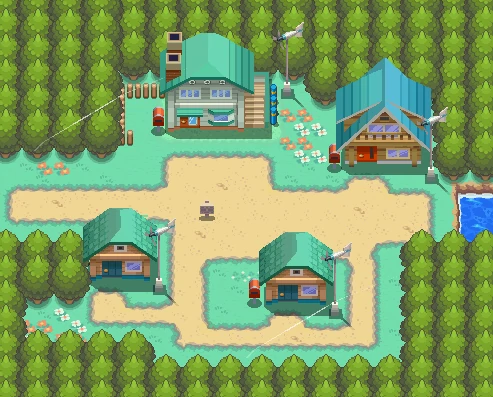
- Casa del jugador
- Casa del rival
- Laboratorio del profesor Elm
-
Ciudad Cerezo
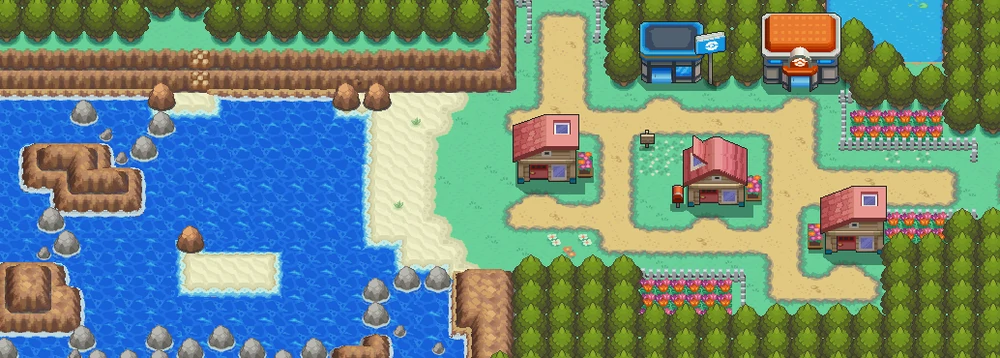
-
Ciudad Malva
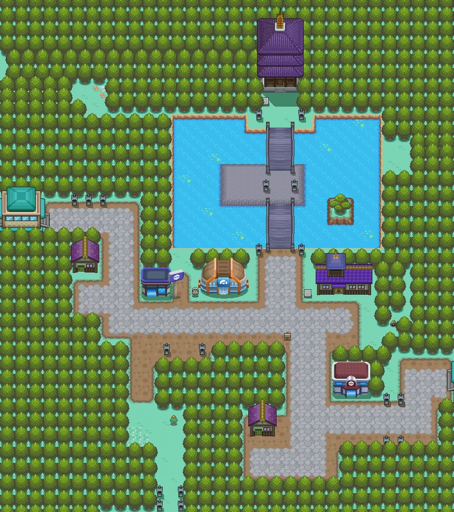
- Torre Bellsprout
- Academia pokémon
-
Gimnasio pokémon de tipo volador
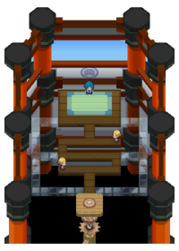
-
Pueblo Azalea
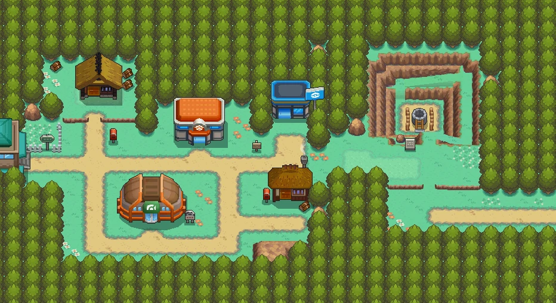
- Pozo Slowpoke
- Casa de César
-
Gimnasio pokémon de tipo bicho
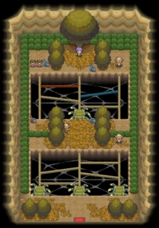
-
Ciudad Trigal
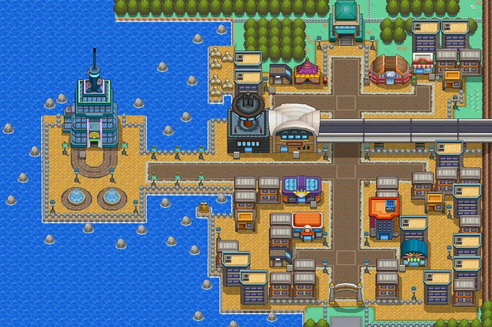
- Casino
- Centro comercial
- Estación de tren
- Torre de radio
- Floristería
-
Gimnasio pokémon de tipo normal
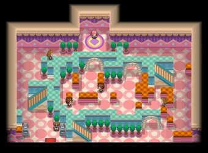
-
Ciudad Iris
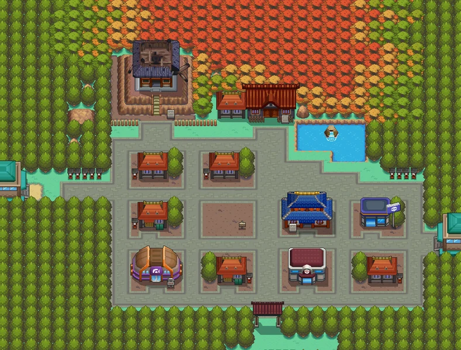
- Torre hojalata
- Torre quemada
- Teatro de danza
-
Gimnasio pokémon de tipo fantasma
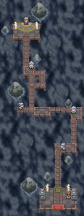
-
Ciudad Olivo
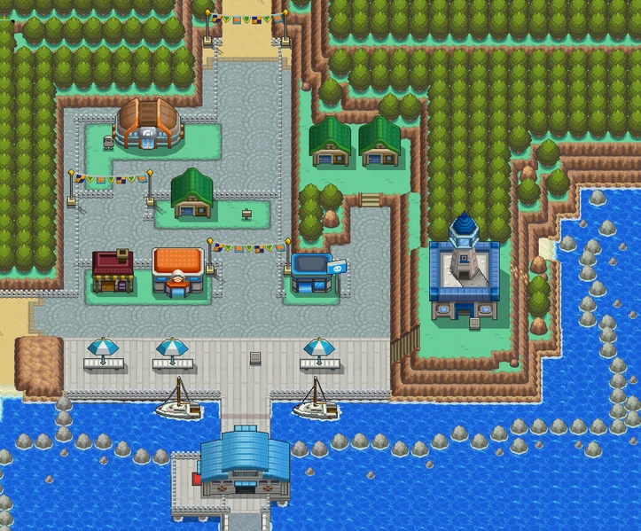
- Faro Olivo
-
Gimnasio pokémon de tipo acero
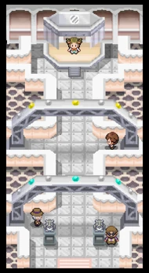
-
Ciudad Orquidea
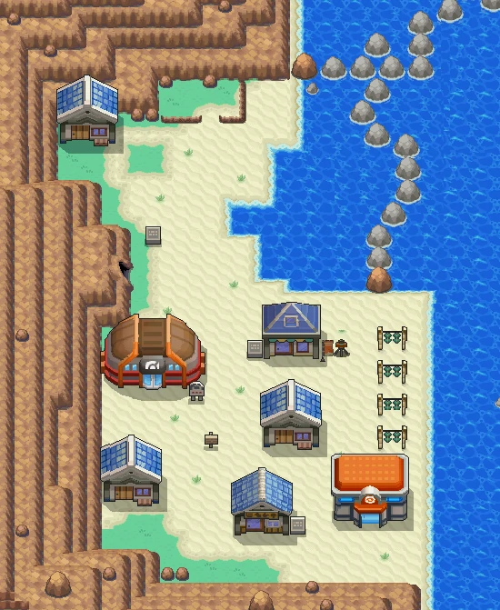
- Farmacia
- Casa de la vidente
-
Gimnasio pokémon de tipo lucha
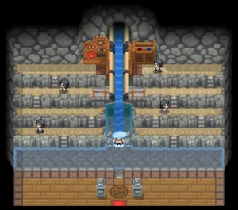
-
Pueblo Caoba
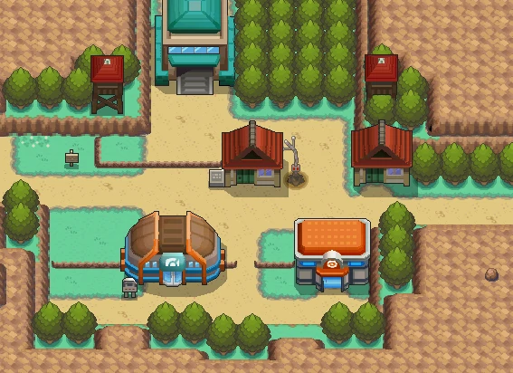
-
Gimnasio pokémon de tipo hielo
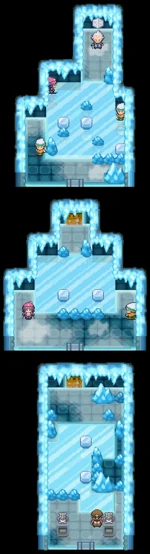
-
Ciudad Endrino
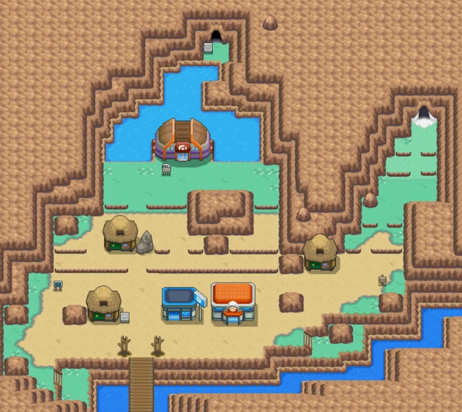
- Casa del quita-movimientos
-
Gimnasio pokémon de tipo dragón
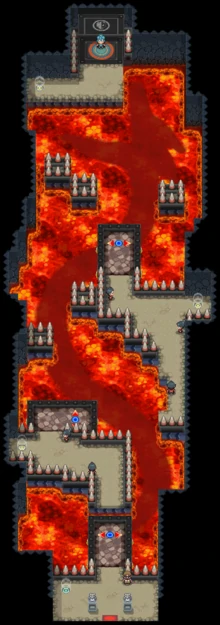
- Calle Victoria
- Liga Pokémon
En Johto se pueden encontrar 100 especies distintas de pokémons:
- - Chikorita
- - Bayleef
- - Meganium
- - Cyndaquil
- - Quilava
- - Typhlosion
- - Totodile
- - Croconaw
- - Feraligatr
- - Sentret
- - Furret
- - Hoothoot
- - Noctowl
- - Ledyba
- - Ledian
- - Spinarak
- - Ariados
- - Crobat
- - Chinchou
- - Lanturn
- - Pichu
- - Cleffa
- - Igglybuff
- - Togepi
- - Togetic
- - Natu
- - Xatu
- - Mareep
- - Flaaffy
- - Ampharos
- - Bellossom
- - Marill
- - Azumarill
- - Sudowoodo
- - Politoed
- - Hoppip
- - Skiploom
- - Jumpluff
- - Aipom
- - Sunkern
- - Sunflora
- - Yanma
- - Wooper
- - Quagsire
- - Espeon
- - Umbreon
- - Murkrow
- - Slowking
- - Misdreavus
- - Unown
- - Wobbuffet
- - Girafarig
- - Pineco
- - Forretress
- - Dunsparce
- - Gligar
- - Steelix
- - Snubboll
- - Granboll
- - Qwilfish
- - Scizor
- - Shuckle
- - Heracross
- - Sneasel
- - Teddiursa
- - Ursaring
- - Slugma
- - Magcargo
- - Swinub
- - Piloswine
- - Corsola
- - Remoraid
- - Octillery
- - Delibird
- - Mantine
- - Skarmory
- - Houndour
- - Houndoom
- - Kingdra
- - Phanpy
- - Donphan
- - Porygon
- - Stantler
- - Smeargle
- - Tyrogue
- - Hitmontop
- - Smoochum
- - Elekid
- - Magby
- - Miltank
- - Blissey
- - Raikou
- - Entei
- - Suicune
- - Larvitar
- - Pupitar
- - Tyranitar
- - Lugia
- - Ho-Oh
- - Celebi